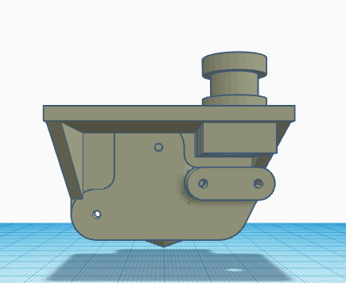
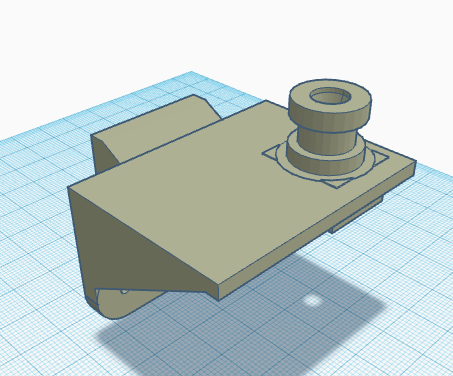

Este proyecto es una modificacion a mi impresora una ender 3 para que esta sea capaza de funcionar como una CNC, lo que hice fue imprimir
este adaptador (Version 4 para la ender 3) pues es una modificacion que me permitira hacer que a la ender 3 se le puedan montar varias herramientas de forma rapida sin tener la preocupacion que lo que se valla a montar no quede centrado.
Para este proyecto le compre un extrusor
Bondtech BMG a mi impresora para poder agregarlo como un extrusor directo y asi poder imprimir con materiales felxibles, asi que lo que hice fue modificar el adaptador para el extrusor para que pudiera soportar y apollar el Bondtech encima de el extrusor.


Pero to tome en cuenta que la fuerza de el extrusor era mayor que la resitencia de la impresion asi que este modelo lo tuve que imprimir 2 veces antes de darme cuenta de que esta idea no era factible, por lo que mejor compre un tubo más estrecho y atornille el extrusor en donde estaba por defecto. Espero ahora poder imprimir con materiales flexibles